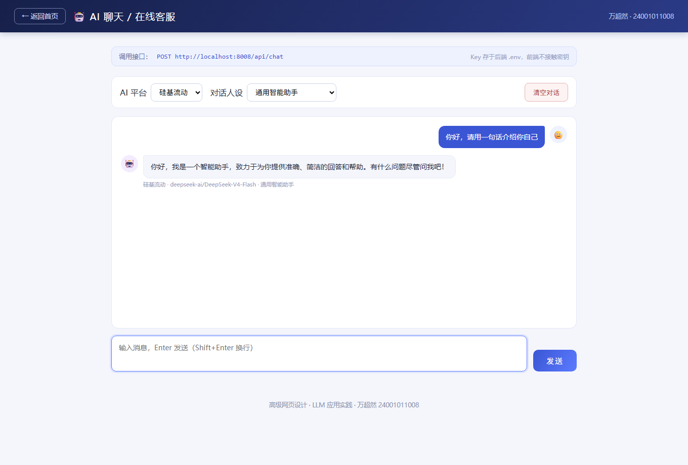
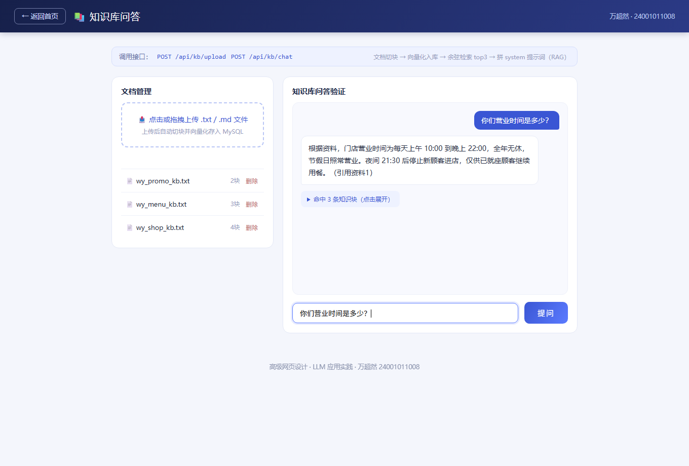
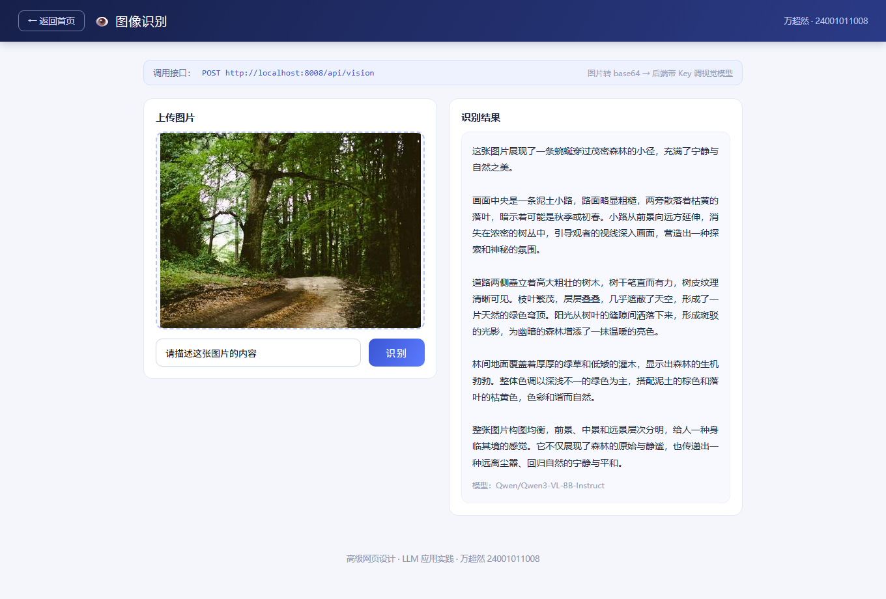
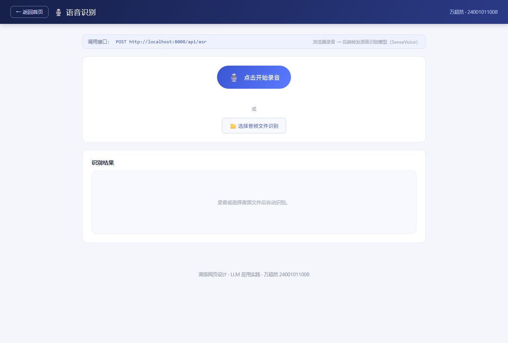

LLM APP PRACTICE
LLM 实践操作演示
课程实践中的四个 AI 能力模块 · 在上节课全栈项目（Node.js + Express，端口 8008）基础上完成 · 点击截图可放大查看。
💡 下方截图为运行实测。如需在线交互（真实对话 / 上传 / 录音），请先在本机启动后端（双击全栈项目 start.bat），
再访问 llm-ai.html ·
llm-kb.html ·
llm-vision.html ·
llm-voice.html。
API Key 仅存于后端 .env（不进前端、不进 Git）。
MODULE · 01
🤖 AI 客服 · 硅基流动 / 七牛 切换 下拉框 + 对话
前端通过下拉框切换 AI 服务商（硅基流动 / 七牛），后端读取 .env 配置转发请求即可切换模型来源；多轮对话由前端维护完整 messages 数组实现，切换平台后历史继续有效；客服人设只回答营业时间、招牌菜、配送范围三类问题。AI 回复下方标注了本次实际使用的平台与模型名。

MODULE · 02
📚 知识库 · 上传文件 + 功能验证 RAG
自行上传 txt/md 文档，后端自动切块（约 500 字/块）并调用 embedding 模型（BAAI/bge-m3）向量化存入 MySQL（wy_kb_docs / wy_kb_chunks 表）；提问时对全表做余弦相似度检索取 top3，拼入 system 提示词要求"仅根据资料回答并标注引用"，实现检索增强生成（RAG）。左图为已上传的 3 个知识库文档（共 9 个知识块）。

MODULE · 03
🖼️ 图像识别 · 上传图片 + 测试 Vision
上传本地图片转 base64，由后端携带 API Key 调用多模态视觉模型（Qwen/Qwen3-VL-8B-Instruct）进行视觉理解，返回对物体 / 文字 / 场景的描述，支持自定义提问。

MODULE · 04
🎤 语音识别 · 测试功能 ASR
浏览器录音（MediaRecorder）或上传音频文件，后端内存接收后转发语音识别模型（Qwen/Qwen3-ASR-1.7B），返回识别文字。页面提示：请在 Chrome / Edge 中允许麦克风权限。
